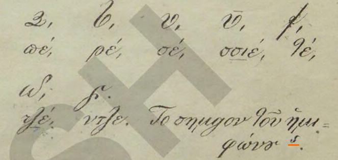
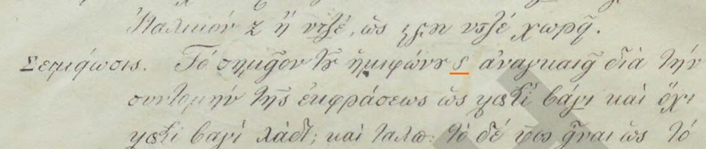
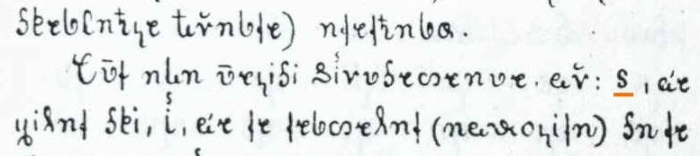
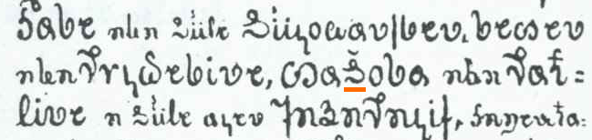
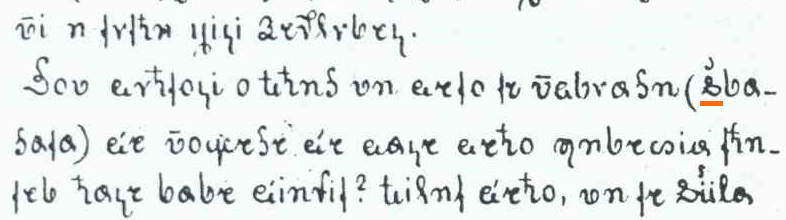
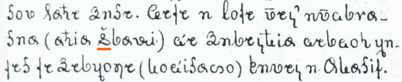
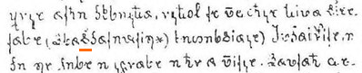
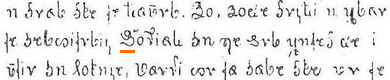

The semivocalic mark (called σημεῖον τοῦ ἡμιφώνου in the 1844 primer and shënimi gjusmëzëesë in the 1845 one) resembles a Latin s, and is described as a mark for semivowels. It is only ever found on ⟨𐖥⟩ i, itself exclusively in the sequences ⟨𐖡𐖦⟩ gj, ⟨𐖧𐖦⟩ j or, less commonly, ⟨𐖰𐖦⟩ q. Veqilharxhi did not consider ⟨𐖦⟩ to be a separate letter of the alphabet, as he never includes it in alphabet lists. In contrast, he often provides the semivocalic mark as a stand-alone symbol as he explains the alphabet. Nevertheless, ⟨𐖦⟩ has already been encoded as a precomposed letter, under the confusing name VITHKUQI SMALL LETTER IJE (U+105A6), together with an unattested uppercase counterpart. A separate codepoint for the stand-alone symbol is required to properly digitise the instances in which he explains the mark's function. We propose a new non-combining codepoint VITHKUQI SEMIVOCALIC MARK (U+105BE). We furthermore recommend the addition of an annotation to LETTER IJE (U+105A6, U+1057F) mentioning a corrected name LETTER I WITH SEMIVOCALIC MARK.



The canonical shapes given in the official charts for VITHKUQI CAPITAL LETTER DE (U+10575), VITHKUQI CAPITAL LETTER DHE (U+10576) and VITHKUQI CAPITAL LETTER I (U+1057E) should be amended. [Find good images.] Consequently, VITHKUQI CAPITAL LETTER IJE (U+1057F) should be amended as well.
The codepoints for ⟨𐖤⟩ HHA (U+105A4, U+1057D), which following Greek ⟨χ⟩ stood for [x] before back and central vowels and [ç] before front vowels, and for ⟨𐖦⟩ IJE (U+105A6, U+1057F), thoroughly described above, currently have an annotation "used in 19th-century orthography". This seems neither useful nor descriptive, as the entire script was used exclusively in the 19th century.
For a reason or another, all of the previous sections happen to be bothered with the codepoint U+1057F, which was called VITHKUQI CAPITAL LETTER IJE for a supposed capital form of the precomposed glyph of i with semivocalic mark. We are requesting these changes to that codepoint merely for parallelism to the changes we propose to either its lowercase form (sections 1 and 3) or its unmarked uppercase counterpart (section 2), as in fact, this letter is the only one encoded in the block to never be attested in the primary sources.
Its lack of attestation is not due to the limitedness of the corpus, but due to its impossibility to ever occur. The letter, following orthographical rules, can never occur word-initially, and the script, emulating handwriting, has unsurprisingly no attested instance of all-capital text: even title pages and section headers follow usual capitalisation rules.
We are not interested in recommending any action regarding this and accept its inclusion for structural or presentational reasons, but given the unexpected centrality of this letter in our proposal, we found it necessary to briefly cover the topic, to let it be known that anything about the letter, from its existence to its proposed shape, is conjectural. For example, assuming its existence, it is not unlikely that following how Greek diacritics behave, the semivocalic mark could have actually moved to the left of the letter rather than being kept above it, making such an alternative shape equally as valid as the putative shape we are currently proposing.
Much like other Albanian native and Greek-derived alphabets, the Vithkuqi script also had a consistent way of denoting the voiced velar fricative /ɣ/, absent from modern standard Albanian, but present, although marginal, in the Greek-influenced dialects of southern Albania. The symbol, absent from alphabet lists and left unexplained in his writing, consists of the letter ⟨𐖡⟩ g with a breve-like sign above. This can be handled with the COMBINING BREVE (U+0306), although due to lack of documentation of the glyph no font currently displays this properly. This can be pointed out in the technical note.




